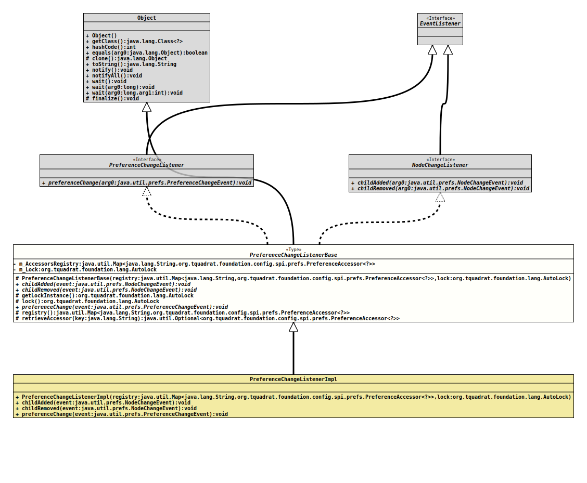

Class PreferenceChangeListenerBase
java.lang.Object
org.tquadrat.foundation.config.spi.prefs.PreferenceChangeListenerBase
- All Implemented Interfaces:
EventListener,NodeChangeListener,PreferenceChangeListener
- Direct Known Subclasses:
PreferenceChangeListenerImpl
@ClassVersion(sourceVersion="$Id: PreferenceChangeListenerBase.java 944 2021-12-21 21:56:24Z tquadrat $")
@API(status=STABLE,
since="0.1.0")
public abstract class PreferenceChangeListenerBase
extends Object
implements PreferenceChangeListener, NodeChangeListener
This class provides the base for an implementation of a change
listener for the connected USER Preferences as defined through the
interfaces
NodeChangeListener
and
PreferenceChangeListener.
All implementations must provided a public constructor with the
same signature as
that for this class.
The class
PreferenceChangeListenerImpl
provides a default implementation.
- Author:
- Thomas Thrien (thomas.thrien@tquadrat.org)
- Version:
- $Id: PreferenceChangeListenerBase.java 944 2021-12-21 21:56:24Z tquadrat $
- Since:
- 0.1.0
- UML Diagram
-

UML Diagram for "org.tquadrat.foundation.config.spi.prefs.PreferenceChangeListenerBase"
{kind=link}
-
Field Summary
FieldsModifier and TypeFieldDescriptionprivate final Map<String,PreferenceAccessor<?>> The reference to the registry of the preferences accessors.private final AutoLockThe "write" lock that guards the access to the properties. -
Constructor Summary
ConstructorsModifierConstructorDescriptionprotectedPreferenceChangeListenerBase(Map<String, PreferenceAccessor<?>> registry, AutoLock lock) Creates a newPreferenceChangeListenerImplinstance. -
Method Summary
Modifier and TypeMethodDescriptionabstract voidchildAdded(NodeChangeEvent event) abstract voidchildRemoved(NodeChangeEvent event) protected final AutoLockReturns a reference to the lock instance.protected final AutoLocklock()Locks the connected configuration bean for writing.abstract voidprotected final Map<String,PreferenceAccessor<?>> registry()Provides a reference to the registry for the accessors.protected final Optional<PreferenceAccessor<?>>retrieveAccessor(String key) Retrieves the accessor for the givenPreferenceskey.
-
Field Details
-
m_AccessorsRegistry
The reference to the registry of the preferences accessors. -
m_Lock
The "write" lock that guards the access to the properties.
-
-
Constructor Details
-
PreferenceChangeListenerBase
Creates a newPreferenceChangeListenerImplinstance.- Parameters:
registry- The reference to the registry of the preferences accessors.lock- The lock that guards the access to the properties.
-
-
Method Details
-
childAdded
- Specified by:
childAddedin interfaceNodeChangeListener
-
childRemoved
- Specified by:
childRemovedin interfaceNodeChangeListener
-
getLockInstance
Returns a reference to the lock instance. This does not trigger the lock!
Use this method like this:
… final var lock = getLockInstance(); lock.execute( () -> doSomething() ); …- Returns:
- The lock instance.
-
lock
Locks the connected configuration bean for writing.
Use this method like this:
… try( final var ignore = lock() ) { // Add here whatever needs to be done … } …- Returns:
- The locked lock.
-
preferenceChange
- Specified by:
preferenceChangein interfacePreferenceChangeListener
-
registry
Provides a reference to the registry for the accessors. The key for the map is the preferences key, not the property name!- Returns:
- A reference to the accessor registry.
-
retrieveAccessor
Retrieves the accessor for the givenPreferenceskey.- Parameters:
key- The key.- Returns:
- An instance of
Optionalthat holds the accessor.
-